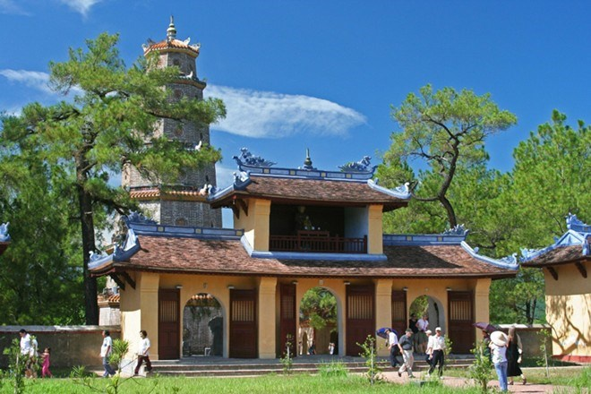

Du lịch Việt Nam
Chùa Thiên Mụ
Còn gọi là chùa Linh Mụ, là ngôi chùa cổ nằm trên đồi Hà Khê, tả ngạn sông Hương, cách trung tâm thành phố Huế khoảng 5km về phía tây. Chùa Thiên Mụ chính thức được xây dựng vào năm Tân Sửu (năm 1601), đời chúa Tiên Nguyễn Hoàng, vị chúa Nguyễn đầu tiên ở Đàng Trong.

Với cảnh đẹp tự nhiên và quy mô rộng lớn, chùa Thiên Mụ đã trở thành ngôi chùa đẹp nhất thời bấy giờ. Trải qua bao biến cố lịch sử, chùa Thiên Mụ từng được dùng làm đàn Tế Đất dưới triều Tây Sơn (khoảng năm 1788), rồi được trùng tu nhiều lần dưới các triều vua nhà Nguyễn. Ngày nay chùa vẫn được tiếp tục chỉnh trang ngày càng huy hoàng, tráng lệ và luôn hấp dẫn, thu hút đông đảo du khách gần xa.
